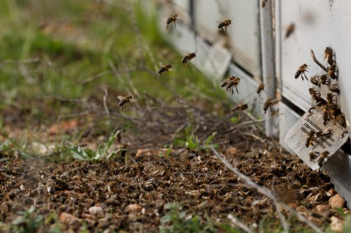
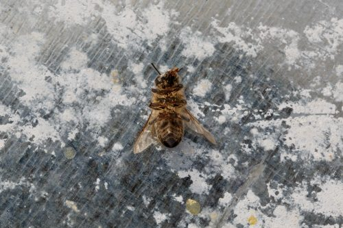
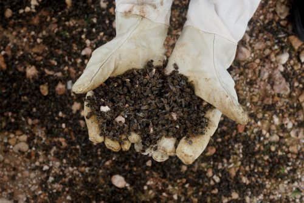

Problema general
Las abejas son mucho más importantes de lo que pensamos. La producción de alimentos a nivel mundial y la biodiversidad terrestre dependen en gran medida de la polinización, un proceso natural que permite que se fecunden las flores y den así frutos y semillas. Las abejas, y otros insectos como mariposas y abejorros, son unos de los grandes responsables de este proceso y, sin embargo, sus poblaciones están disminuyendo a pasos de gigante. Entre los factores que amenazan a los polinizadores están:
La pérdida y deterioro de hábitats.
Las prácticas de la agricultura industrializada, como los monocultivos (menor disponibilidad y diversidad de alimento para estos insectos) y el uso de plaguicidas.
Parásitos y enfermedades.
Especies vegetales y animales invasoras.
Los impactos del cambio climático.


Se ha calculado que el valor económico de la labor de polinización de las abejas y otros polinizadores para la agricultura es de unos 265.000 millones de euros anuales en todo el mundo, 22.000 millones para Europa y más de 2.400 millones de euros para España, recientemente calculado por Greenpeace en su informe “Alimentos bajo amenaza”. Así pues, incluso desde un punto de vista puramente económico, merece la pena proteger a las abejas.

Las cifras del problema que sufren los polinizadores son contundentes. El informe de la Plataforma Intergubernamental sobre Biodiversidad y Servicios de los Ecosistemas (IPBES, por sus siglas en inglés) advierte que el 40% de los polinizadores invertebrados, en particular abejas y mariposas, se enfrentan a la extinción. Nos dice además que en Europa el 37% de las poblaciones de abejas están disminuyendo, un claro ejemplo de que el modelo agroalimentario predominante nos está llevando a un callejón sin salida.